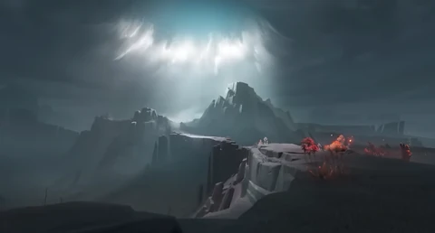

Natlan · Geography & Locations
Mare Jivari
Mare Jivari is a remote place described in adventurer and character records as a dangerous, windless expanse. The game has referenced it for years; not every story told about it is confirmed firsthand exploration.

A place known through stories
Mare Jivari is described in Genshin Impact as a remote, dangerous place where the wind does not blow. Most references come from characters, books, and adventurer records rather than a complete exploration of the location.
Because the game has not shown every part of Mare Jivari directly, readers should be careful with exact maps or timelines. A story about the place may be true, exaggerated, or incomplete.
The windless image
The phrase ‘where the wind does not blow’ makes Mare Jivari stand apart from the world’s usual elemental landscapes. It is used to suggest isolation and danger, especially in records about expeditions.
That description is not enough to identify every cause of the region’s conditions. The game has not yet provided a full in-person account that settles all of its mysteries.
Connections to Natlan
Mare Jivari is associated with Natlan in the game’s lore and adventurer references. Characters’ stories use it to explain the limits of exploration and the risks faced by people who travel far from established routes.
Keep older references separate from later Natlan quests. A connection to the region does not mean that every event from Natlan’s current story happened there.
What can be said safely
The safe facts are the name, its reputation as a windless and hazardous place, and its role in stories about distant exploration. The exact geography and full history remain open.
This page will grow if the game gives players direct evidence. Until then, the archive treats detailed claims about Mare Jivari as unconfirmed.
This is an original CoreGG reading guide, not an official HoYoverse article or a reproduction of the game text. Source links below identify the records used so you can check the original context.
Sources & references
Check these sources for the original game text and reference trail.